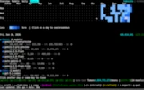
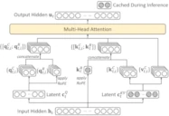
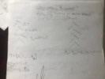
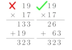
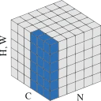
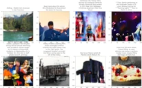

I like machine learning and their applications. I'm currently interested in performance optimization, although I have done a bunch of reimplementations on generative image/video models.
I like this 32x32 pixel turtle image since it was my testing image when I was learning about super-resolution, which happened to be one of my first serious programming projects.

A list of how I use coding agents for triton-viz
January 30, 2026

My notes on DeepSeek-V2's (but also used in V3) multihead latent attention
May 24, 2025

Using math to answer a question where math shouldn't be involved
September 13, 2024

I may have peaked in second grade
September 7, 2024

A writeup of the math behind group normalization's forward and backward pass with emphasis on efficient backward pass calculation
September 3, 2024

A comprehensive description of my thoughts when trying to make a latent diffusion model (LDM) train as fast as it can while only free compute sources
September 2, 2024
GitHub: https://github.com/latentCall145